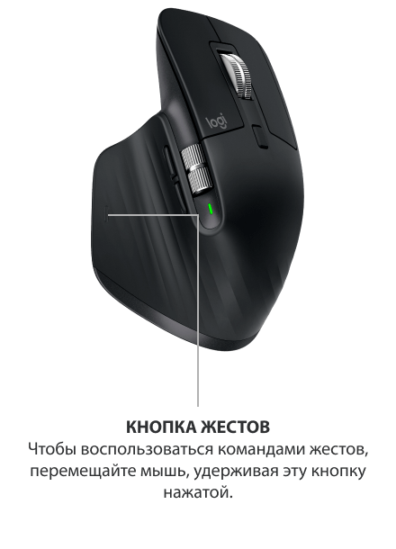

С ИНДИВИДУАЛЬНЫМИ НАСТРОЙКАМИ
Мышь MX Master 3 адаптируется под ваши рабочие процессы. Благодаря индивидуальным настройкам, вы сможете настроить кнопки и жесты практически под любое используемое приложение.





Начните работать продуктивнее с момента покупки — устройство предварительно оптимизировано под популярные приложения на Windows и Mac.